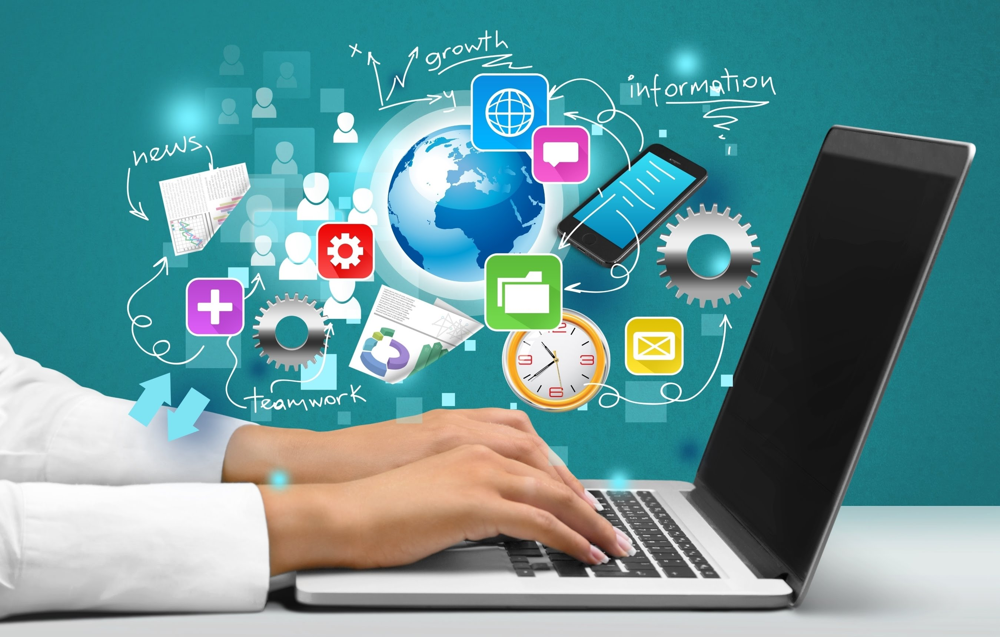

With the changing time, many new technology has been developed and invented on a daily basis which has affected great impact on human lives. One of the major technology that has even been developed was Internet. With the help of internet in today's world people can explore the whole world and know about all the current situation that is occurring all over the world. People can play games, watch videos as well as people can pay bills through internet which helps to save people's time and make a work a lot bit easier and faster. 
With the help of internet people can face time and communicate with their closed people all around the world. Similarly, people can do business, learn and search information with the help of internet. The internet does not only allows for communication through email but also it ensures easy availability of information, images, and other things.
Similarly, internet has its disadvantages too. Because of the excessive use of internet students are more likely to neglect their studies and get addicted to playing games and watching videos. As, internet has made people life easier, with the large amount of information that are freely available on the internet, misuse of the information are greater chance of possibility. Similarly sitting infront of computers and using it for a long time can damage our eyes, and put a neck or shoulder strain. Similarly excessive use of internet let's people distract from everything which apart them to develop their interpersonal skills.